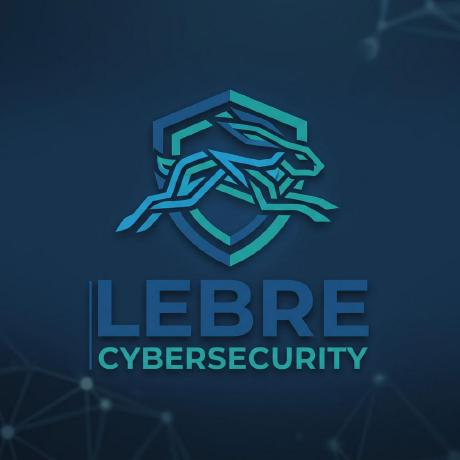

Sistemas · Cloud · Ciberseguridad
Construyo software.Y entiendo lo que ocurre debajo.
Soy Daniel Lebrero. Trabajo en soporte N1 y gestión de sistemas, desarrollo aplicaciones web y practico ciberseguridad en mi propio laboratorio.
- Aplicaciones reales
- Infraestructura propia
- Seguridad por diseño

Aprendiendo y construyendo01 / BUILD02 / SECURE03 / OPERATE12 nov 2026
en el TFM
aprobado
BUILD ◆ TEST ◆ SECURE ◆ DEPLOY ◆ LEARN ◆ BUILD ◆ TEST ◆ SECURE ◆ DEPLOY ◆ LEARN ◆
01 / Sobre mí
No colecciono herramientas.Construyo criterio.
Me interesa el recorrido completo de una idea: convertirla en producto, proteger sus límites, desplegarla y observar cómo se comporta.
Una web para un negocio me llevó del desarrollo al DNS y al SEO. Una utilidad de consola me llevó a pensar en autenticación y SSRF. Mi servidor me llevó a diseñar redes, observabilidad y recuperación.
Mi objetivo no es que algo simplemente funcione. Es poder explicar por qué funciona, cómo falla y qué cambiaría en la siguiente iteración.
Construir
Del problema al producto, con interfaces claras y decisiones mantenibles.
Proteger
Mínimo privilegio, límites explícitos y amenazas consideradas desde el diseño.
Operar
Despliegues reproducibles, métricas útiles y documentación recuperable.
Experiencia profesional
Soporte N1 y gestión de sistemas
IaaS365Trabajo con Entra ID y SharePoint, gestionando accesos, permisos e incidencias. Esa experiencia conecta mi día a día en soporte con la formación en Azure y la práctica de seguridad en el laboratorio.
02 / Proyectos seleccionados
Ideas convertidasen sistemas reales.
Cada proyecto empezó resolviendo una necesidad. El valor apareció al afrontar todo lo que rodea a la primera versión.01● Web publicada
Desarrollo y despliegue para un negocio real
Top & Performance
Web de entrenamiento y nutrición online. Me encargué del desarrollo, el despliegue en Cloudflare Pages, la configuración DNS y el SEO técnico.
- Cloudflare Pages
- DNS
- SEO técnico
- Open Graph
Del código a la publicación
- Despliegue
- Cloudflare Pages y dominio propio.
- SEO técnico
- Canonical, robots.txt, sitemap y datos estructurados.
- Imágenes y enlaces
- AVIF y metadatos Open Graph para compartir la web.
02● Desplegado
yt-dlp Web
Interfaz multiusuario con Flask. Incorpora autenticación, protección CSRF, defensa contra SSRF y control de concurrencia.
- Python
- Flask
- SQLite
- AppSec
03● Solo red local
Codeshare Local
Editor colaborativo en tiempo real accesible únicamente desde la red local y no disponible en Internet. Sin analítica, CDN ni peticiones a terceros; sincroniza contenido, presencia y cursores con WebSockets.
- Node.js
- WebSockets
- JSON
- Nginx
04● TFM realizado · Top 10
Auditoría de seguridad en laboratorio
BigShop · TFM
Auditoría de caja gris de una tienda online de laboratorio con cuatro servicios web. Documenté 28 vulnerabilidades, tres de ellas críticas, en un informe de 97 páginas con puntuación CVSS para cada hallazgo.
- Seguridad web
- Caja gris
- CVSS
- Documentación técnica
Entre los diez mejores TFM
Seleccionado en la primera edición del Máster en Ciberseguridad de BIG school.
- 28 hallazgos
- Tres vulnerabilidades críticas.
- 97 páginas
- Alcance, evidencias, impacto y valoración de los hallazgos.
- Entorno controlado
- Trabajo académico sobre BigShop, una tienda de laboratorio.
05● Solo red local
Lebre Services
Dashboard propio de solo lectura, accesible únicamente desde la red local y no disponible en Internet. Permite consultar el estado de los servicios sin entregar a la aplicación control total sobre Docker.
- Python
- Docker API
- Socket Proxy
03 / Laboratorio de sistemas
Un servidor.Muchas capas.
Un entorno propio para practicar entrada, red, datos, seguridad, observabilidad y operación. Inventario comprobado el 12 de noviembre de 2026.51contenedores en ejecución
18 son componentes de entornos locales de Supabase y 33 pertenecen al resto de servicios. Cuenta contenedores, no aplicaciones: una misma aplicación suele repartirse entre varios, junto a bases de datos, proxies y otros componentes auxiliares.
Instantánea del 12 nov 2026 · Comprobada con Docker · No se actualiza en tiempo realUsuariosLAN · VPN · WEB
NginxHTTPS · PROXY · WEBSOCKETS
AplicacionesWEB · AUTOMATIZACIÓN · TOOLS
DatosSQL · SQLITE · VOLUMES
PlataformaDOCKER · NETWORKS
Entrada controlada
Nginx concentra HTTPS y mantiene los backends en localhost. Publicar también implica saber retirar.
Nginx · TLS · CA localRed privada
WireGuard ofrece acceso remoto sin convertir cada panel administrativo en un servicio público.
WireGuard · Pi-hole · DNSVisibilidad
Uptime Kuma comprueba disponibilidad y Node Exporter expone métricas del host para observar el estado de los servicios.
Uptime Kuma · Node ExporterDatos propios
Nextcloud, Immich y PostgreSQL convierten la persistencia, las copias de seguridad y la recuperación en responsabilidades concretas.
Nextcloud · Immich · PostgreSQLIntegración
Jellyfin, Sonarr, Radarr y sus servicios auxiliares conectan catálogo, automatización y reproducción dentro del laboratorio.
Jellyfin · Sonarr · Radarr“Running” no significa “saludable”.
Operar bien empieza cuando el estado deja de ser binario.
04 / Aprendizaje continuo
Aprender, aplicar,volver a medir.
La formación se queda cuando encuentra un proyecto real sobre el que hacer preguntas.Diseñar software mantenible
TDD, patrones de diseño, CI/CD y arquitectura hexagonal. De Red-Green-Refactor a pipelines con GitHub Actions y Docker.
- TDD
- Design Patterns
- CI/CD
- Hexagonal
Auditar y comunicar el impacto
Auditoría de caja gris de BigShop en laboratorio: 28 vulnerabilidades documentadas y un informe de 97 páginas. Trabajo seleccionado entre los diez mejores TFM de la primera edición.
- Seguridad web
- CVSS
- Análisis de impacto
- Informe técnico
Microsoft Azure Fundamentals
Fundamentos de nube, seguridad, gobierno y costes. Una base para conectar el trabajo con Entra ID y SharePoint con la administración de un entorno cloud.
Ingeniería Informática
Contexto académico para conectar fundamentos, prácticas y TFG con problemas reales de desarrollo, arquitectura e infraestructura.
05 / Licencias y certificaciones
Formación que se convierteen capacidad práctica.
Una base en redes, seguridad, datos e inteligencia artificial que aplico al construir y operar proyectos reales.Formación aplicada
Máster en Ciberseguridad
BIG school · Auditoría de seguridad webMicrosoft Certified: Azure Fundamentals
Cloud · Seguridad · Gobierno · Costes
Ver publicación del logro ↗AI Skills Fest 2026
Inteligencia artificial
Endpoint Security
Seguridad de redes · Seguridad física
ID 70203c7f-24b8-43be-9bc9-eeec36122793Networking Devices and Initial Configuration
Diseño de redes · Arquitectura de redes
ID 392385c6-aec0-4663-afe7-88d2ab78bc2bNetworking Basics
Diseño de redes · Redes inalámbricas
ID bad56362-ff92-4cab-a825-8e3d96dd25faNetwork Addressing and Basic Troubleshooting
Resolución de problemas de redes · Gestión de redes
ID 98bf12e0-2f50-4f08-bc37-b72c93aeb10bIntroduction to Data Science
Análisis de datos · Ciencia de datos
ID 4103a23c-1da3-4a34-b8c1-1fb2cf7c6edeNetwork Support and Security
Soporte de red · Seguridad
ID 7e14b29d-8a55-4928-972f-c3efe8e526d8Introduction to IoT
Internet de las cosas
ID bf4eef11-26bc-4b54-b515-57b30fb5444dIntroduction to Modern AI
Inteligencia artificial
ID 4b67722b-e488-490b-b6ac-60180b32deedIntroduction to Cybersecurity
Fundamentos de ciberseguridad
ID 9014f102-726e-40c2-acb1-d826c131091a06 / Caja de herramientas
Tecnología con contexto.
DockerPythonCloudflare PagesNginxSupabaseJavaScriptAzureEntra IDSharePointSQLiteGitHub ActionsLinuxWebSocketsAppSecUptime KumaPostgreSQLSEO técnicoWireGuard
07 / Contacto